Connecting PhD scientists with communities that need them most
Science Corps aims to build STEM (Science, Technology, Engineering, and Math) capacity globally. To achieve this goal, Science Corps places recent STEM PhD graduates to teach and develop science curricula in regions with limited access to quality science education. As Science Corps fellows, they support innovative schools and projects by designing scientific curricula, teaching, hosting workshops, and demonstrating experiments that provide students with hands-on STEM experience. Science Corps fellows leverage their expertise and passion to inspire and empower students to pursue degrees in STEM fields.
Mission Statement: To increase equity in STEM education by placing exceptional young scientists to teach, build capacity, and inspire students in resource-limited communities.
Vision Statement: A world where everyone has access to quality STEM education.
The founders of Science Corps felt that the rigors of scientific training offered few opportunities for scientists to develop a global perspective. This is in contrast to the multiple avenues available for physicians to contribute abroad while still gaining career experience.
One of the Science Corps co-founders, Ben Rubin, searched widely after completing his STEM PhD for an opportunity that would allow him to leverage his science background in an avenue outside of the traditional science path of PhD to postdoc. After a long search, he found a school in the rural Philippines that needed a science teacher — CVIF, which is now a long-term Science Corps host site and partner. Here, he spent six months teaching and developing science curricula. His experience was so positive for himself and his students that Science Corps was founded to provide other STEM PhDs with similar experiences.
The long march through the academic requirements of a PhD in Science, Technology, Engineering or Mathematics (STEM) often minimizes opportunities for interactions outside of the research community. The experience and expertise of STEM PhDs is, however, tremendously valuable in underserved communities around the world. Science Corps seeks to be a bridge between these two groups by providing opportunities for recent PhD graduates, as Science Corps Fellows, to step outside the traditional academic path for six months, broaden their perspective and skill set, and contribute their expertise to underserved communities.
Science Corps partners with organizations committed to hands-on science education in underserved communities.
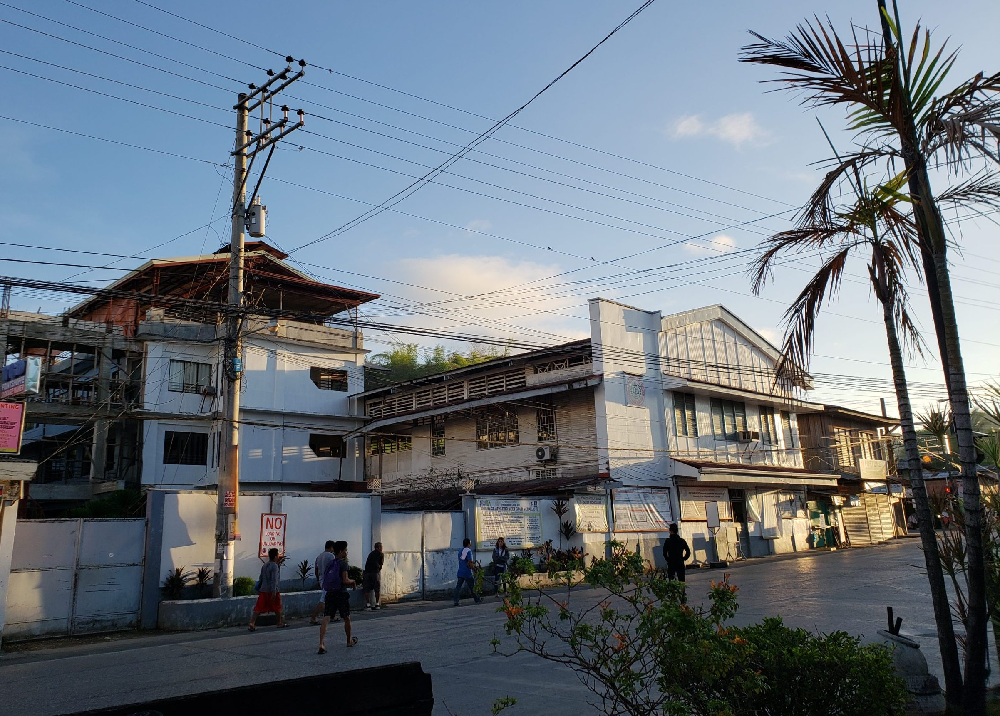
Jagna, Bohol, Philippines
Over the past few years, Science Corps has proudly sent recent STEM PhD fellows to places like Morocco, Bangladesh, India, and the Philippines. Now, we are focusing our efforts on the Philippines, where we aim to create deeper, more meaningful connections and a lasting positive impact for all involved.
CVIF is a leader for Philippine educational development, having created a teaching system called the Dynamic Learning Program, now implemented in approximately 250 schools nationwide. The president and directress of CVIF, Dr. Christopher Bernido and Dr. Maria Victoria Carpio-Bernido, respectively, are deeply involved in educational institutions both within and outside the government. They received the prestigious Ramon Magsaysay Award in 2010.
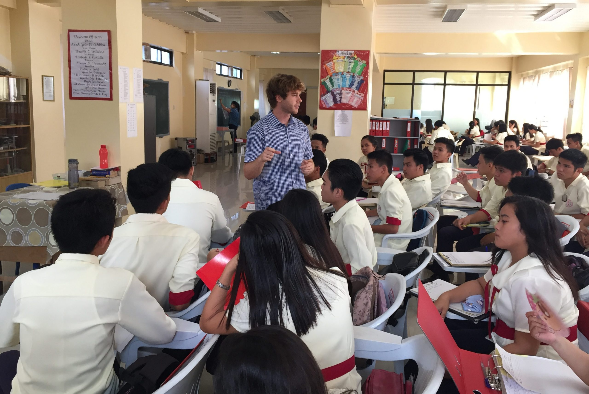
Science Corps Fellows at CVIF play a number of roles: developing STEM teaching materials in their subject of expertise, teaching high school classes, and designing workshops and hands-on activities for students, teachers, and local scientists. CVIF has active ongoing collaborations with other schools in the Philippines, allowing STEM teaching materials to be widely shared and distributed throughout the country.
Tangier, Morocco
Founded in 1950, the American School of Tangier is the oldest international school in North Africa. At AST, 68% of the 380 students are from local families. Science Corps fellows at AST created science curricula focused on climate change, designed to apply learning to real-world local problems — including a water monitoring station and a project to regenerate Moroccan native flora.
Dhaka, Bangladesh
City University was established in 2002 and has grown to over 6,000 students. Science Corps fellows worked with City University to bring hands-on STEM education to students in Bangladesh, contributing to the university's culture of excellence in higher education and research.
Palampur, Himachal Pradesh, India
Aavishkaar is a science education center nestled in the Himalayan foothills, dedicated to making science accessible and engaging for students in rural India. Science Corps fellows at Aavishkaar led workshops, developed materials, and worked closely with local teachers.
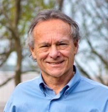
Director and Founder
Edward M. Rubin, MD, PhD, FACMG, is a geneticist and genomicist who has spent more than 25 years as a member of the faculty of the Lawrence Berkeley National Laboratory in Berkeley, California. During much of that time, he served as the Director of the DOE Joint Genome Institute where he played a major role in the Human Genome Project. Over the years, more than 50 postdoctoral fellows have trained in his laboratory, the majority of whom are now scientists at leading universities and research institutes around the world.
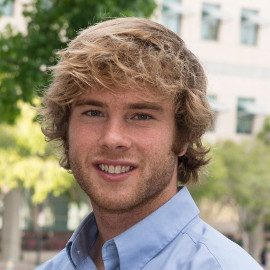
Co-Founder
Benjamin E. Rubin received his PhD in Molecular Biology from the University of California, San Diego. After an extensive search for a program that would leverage his science background in outreach abroad, he found CVIF high school in the Philippines — what would become Science Corps' first site. His six-month experience there was so transformative that he founded Science Corps to provide other STEM PhDs with similar opportunities. He then completed a postdoctoral position in the Jennifer Doudna Lab at UC Berkeley and now runs a lab there.
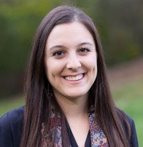
Co-Founder
Sarah received her PhD in Epidemiology from the University of Washington and MSPH in International Health from the Johns Hopkins Bloomberg School of Public Health. She has experience working in government, industry, and non-profit sectors, focusing on population health, analytics, and research. As Co-Founder of One Sun Health Inc., Sarah has experience leading the recruitment and training of international students, as well as building partnerships with local communities and stakeholders.
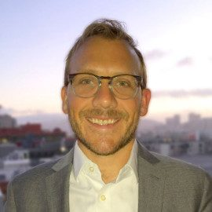
Co-Founder
Stephen E. Harris, PhD, is an Assistant Professor of Biology at Purchase College, State University of New York. After receiving a B.S. in molecular genetics in 2006, he moved to New York City as part of the NYC Teaching Fellows Program teaching high school science in the South Bronx. He served as an NSF Gk-12 fellow building science research curriculum in public schools in NYC and developed an award-winning curriculum that teaches basic molecular biology skills to underserved students using mobile labs.
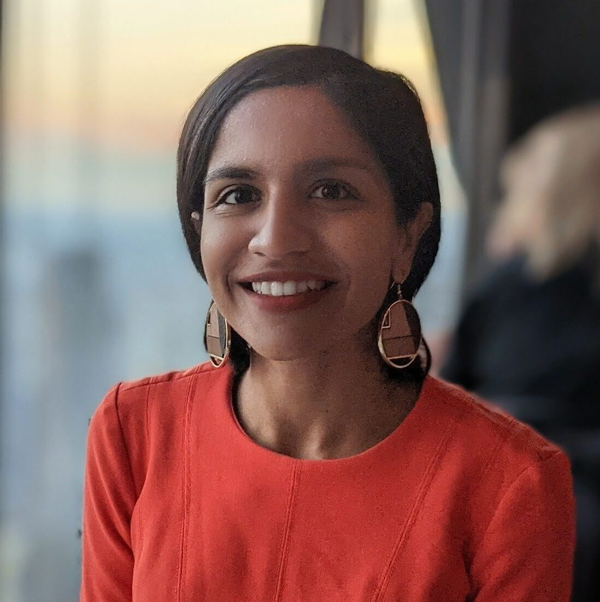
Outreach Team
Tanvi Chheda, PhD, is a Data Scientist at Google. She taught Machine Learning applications and Earth Science as a fellow in the Philippines, and helps the Science Corps core management team with site search and development, fellow recruiting, outreach, and social media engagement. Tanvi has a PhD in Geology and PhD minor in Management Science and Engineering from Stanford University.
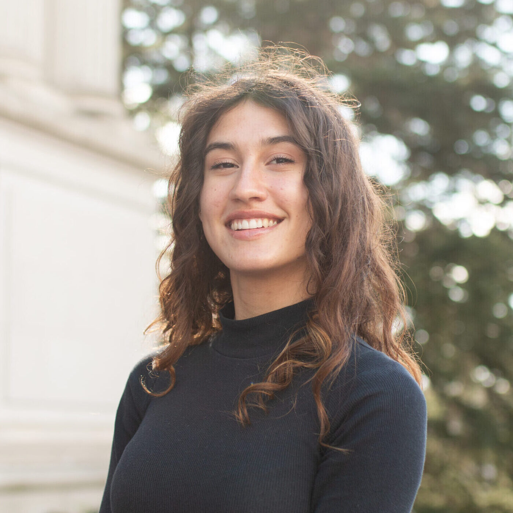
Program Manager
Christine is an undergraduate student at the University of California, Berkeley obtaining her B.A. in Computer Science and Astrophysics. She plans to use her degree to continue onto a graduate program and eventually work within the intersection of modern developing technologies and human welfare. She has prior experience in non-profit sectors, focusing on politics, government, and mental health.
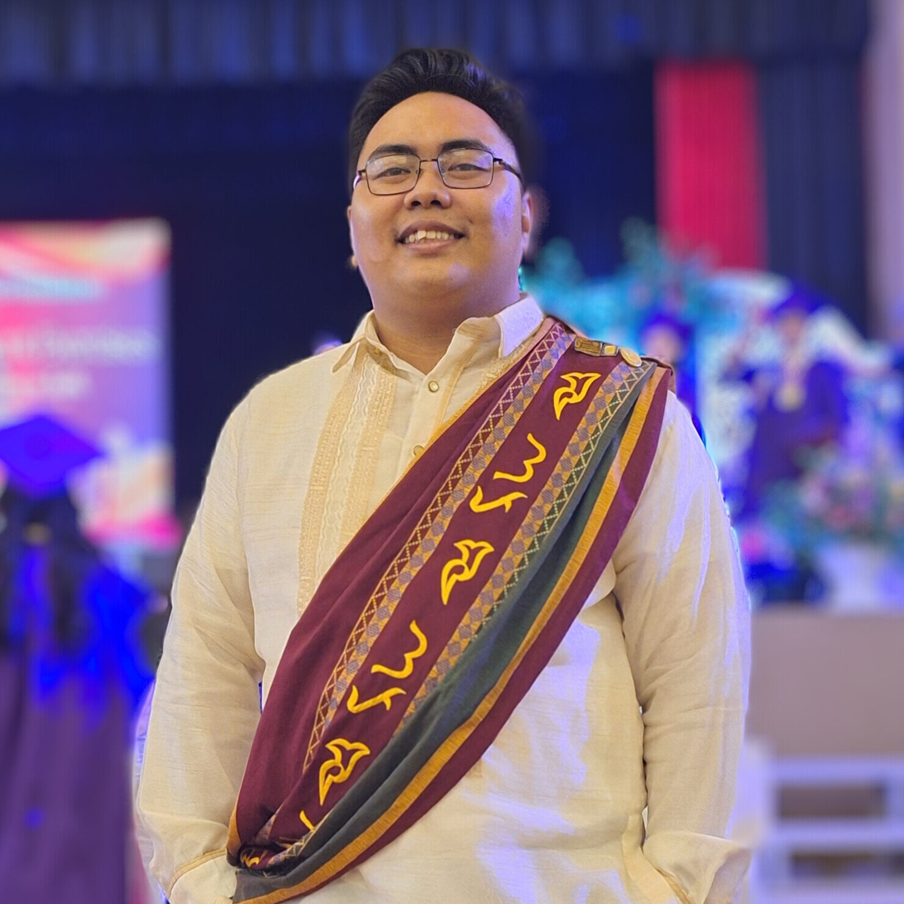
Philippine Manager
Prince Niño Nayga obtained his B.S. in Electrical Engineering from the University of the Philippines – Diliman. Currently, he is utilizing his knowledge in programming to aid in marine research at the JAZC Marine Sciences Laboratory at CVIF. Prince was one of the first students of Science Corps co-founder Ben Rubin at CVIF in 2017 — inspired by that experience, he now ensures that students get the most out of their interaction with Science Corps fellows.
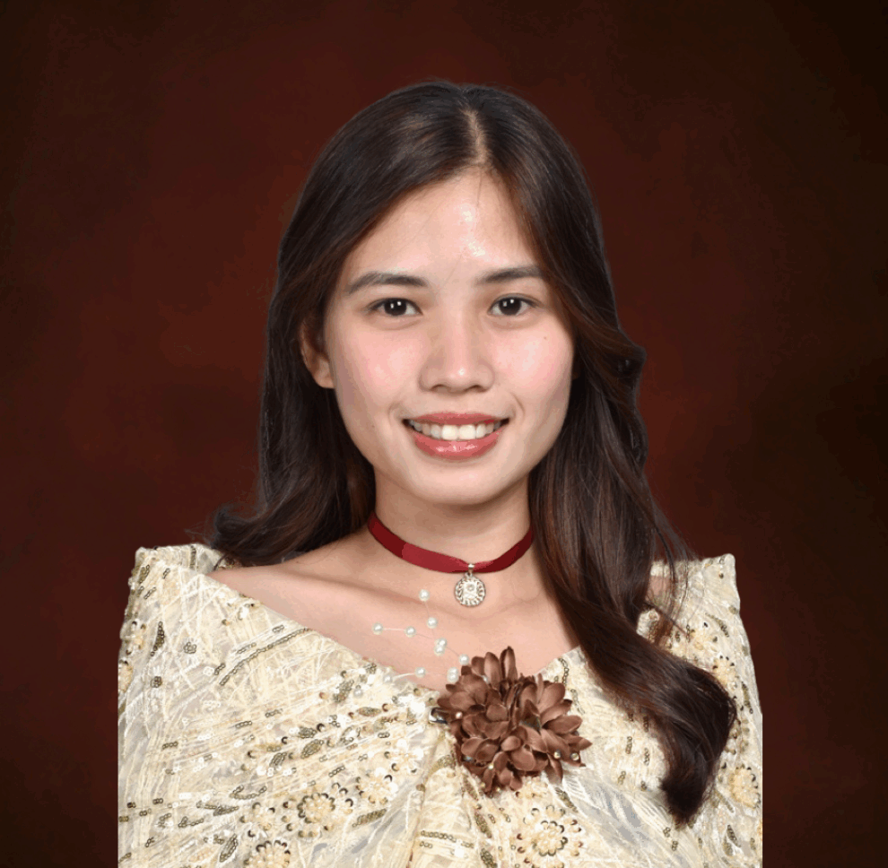
Philippine Manager
CJ Ella Reroma holds a Bachelor in Fine Arts, Major in Product Design from the University of the Philippines Cebu. Her journey with Science Corps began in 2017, when she was one of the pioneer students of Ben Rubin at CVIF. Today, she teaches Marketing, Contemporary Arts, and Practical Research at CVIF, and also serves as the school's Social Media Manager and Content Creator. She is committed to equipping STEM students with the knowledge, creativity, and values needed to build a better future.
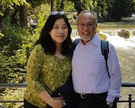
CVIF, Philippines
Drs. Christopher C. Bernido and Maria Victoria Carpio-Bernido are president and directress, respectively, of CVIF high school. Having received PhDs in theoretical physics in the U.S., they returned to the Philippines and established themselves as professors at the University of the Philippines. In 1999 they took the helm of CVIF and instituted the CVIF Dynamic Learning Program, dramatically improving learning outcomes at approximately 250 schools across the Philippines. They were awarded the Ramon Magsaysay Award in 2010, one of Asia's highest honors for service.
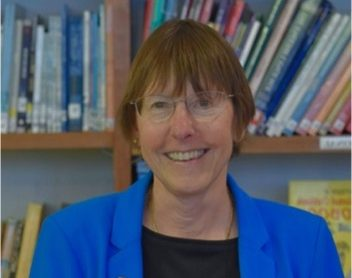
The American School of Tangier, Morocco
The current Head of School at The American School of Tangier, Sarah Putnam brings 35 years of teaching and administrative experience to her leadership of AST. Previously, she has been Head of the International School of Aruba, Deputy Superintendent for Shanghai American School, and Curriculum Coordinator for the American School in Japan. She completed her doctoral coursework for an EdD at the University of Montana, has a Master's Degree in Education from UMASS, and an A.B. from Harvard University.